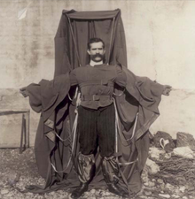

Franz Reichelt(1878–1912)
AuthorAm 4. Februar 1912 um 7 Uhr morgens versammelten sich bei Minusgraden Reporter und Schaulustige am Eiffelturm, um Reichelts Erfindung zu begutachten. Der Einwand der anwesenden Reporter, sein „Fledermaus-Anzug“ habe noch keine befriedigenden Ergebnisse gezeigt, brachte ihn nicht von seinem Vorhaben ab. Um 08:22 Uhr sprang er aus einer Höhe von 57 Metern herab, fiel weitgehend ungebremst zu Boden und schlug vor laufender Kamera nach vier Sekunden Fallzeit am Boden auf. Reichelt starb unmittelbar nach dem Aufprall.[2] Reanimationsversuche blieben vergeblich.
Im Zuge der aufkommenden Fliegerei in den 1910er Jahren und zunehmender Flugzeug-Stunts nahmen auch die Unfälle zu. Reichelt war tief bewegt von den Abstürzen der Piloten und entwarf ab Juli 1910 als Schneider Fallschirmanzüge. Die Konstruktionsprinzipien des Fallschirms liefen jedoch physikalischen Erkenntnissen zuwider.